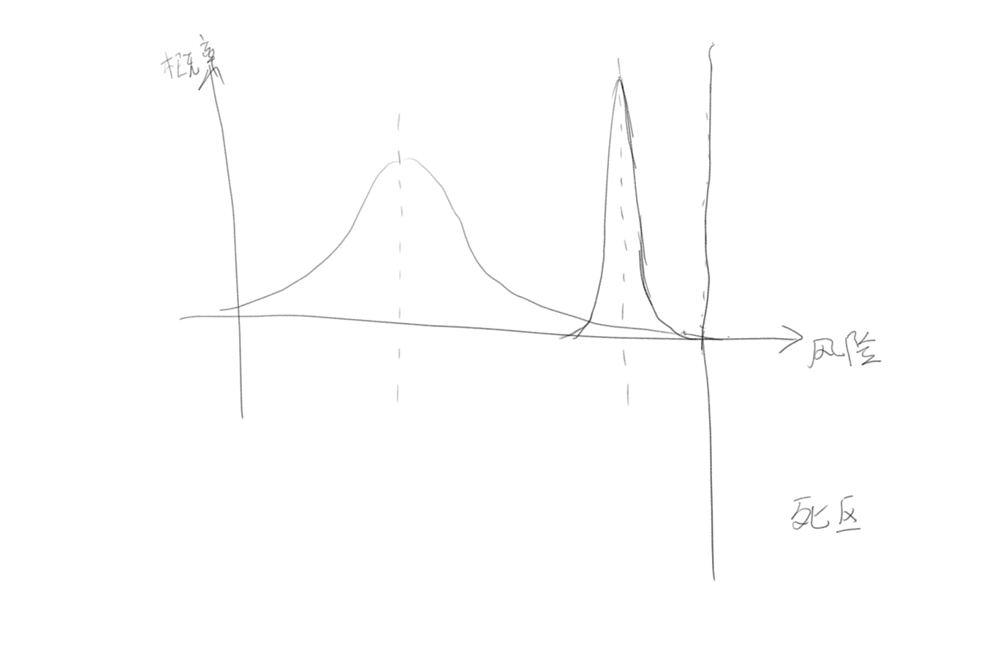

发信人: HYP (孤行), 信区: outdoor
标 题: Re: 金紫尖领队总结--孙启昌
发信站: 饮水思源 (2018年10月09日22:45:06 星期二)
继续说第三点。。。
3. 脑子犯抽，搞了个模型来说明风险控制， 权当个乐呵看，哈哈。
如下面的图， 横坐标为风险，超过一个值你就进入“死区”了，;)
然后一个队伍的发生风险的概率用高斯分布近似（均值由线路难度决定，方差由准备充分
程度、风险控制能力决定）。
那么，对于一个普通的会员队伍方差比较大。 为了不进入无法返回的死区，那就只能把均
值压低。 （或许这就给人带来“协会这个不允许那个不允许”的感觉吧）
那正确的方向是，在成功压缩方差的前提下才能进一步让均值提高，而不是直接提高均值
。
最后，怎么能压缩方差呢？ 规范操作、积累经验、认真思考。。。。
 screen.width - 200){this.width = screen.width - 200}">
木哈哈， 啰嗦了一堆，睡觉去啦~~~
【 在 HYP 的大作中提到: 】
: 好多的帖子， 难得BBS又热闹了啊~
: 我就集中在这说一下我的一些想法吧（背景音，你丫谁啊。。。你来参合啥啊。。。）
: 1. 首先， 同学们，注意一下讨论复旦的语气。。。 从之前的帖子看，貌似复旦也..
: 学习、借鉴的愿望来搞这次联谊活动的。 不管他们的风格如何（只要不是恶意捣乱..
: 相信不会有这种情况的），不要直接抛出不屑于跟他们接触的言论。他们有值得借鉴..
: 我们参考学习； 又不好的，我们也可以考虑如何预防。 直接说不想和他们接触， ..
: 示自己的高明，反而显得自己心胸狭隘了。
: 2. 我想协会严谨的态度， 并不是要求大家“无脑”的遵守，而是培养大家正确的户..
: 识，既控制风险的意识。 这里我对“我有了很多经验，所以我能承受的风险也提高..
: 类论点完全不赞同。 更多的户外经验带来的是把意外发生的概率降低的能力。而降..
: 发生概率的最有效手段之一就是严格遵循规范的流程。（不要受现在鼓吹创新这种风..
: 影响， 挑战现有规范不是那么随便的事）
: 3. 修改模式中居然不能加入附件图片的。。。 好吧， 我还跟帖吧。
: 【 在 srt 的大作中提到: 】
: : 看完领队总结感到十分的震惊！
: : 不理解为什么会连续两晚出现压队独自带人出去看星星的问题，既然知道复旦有晚..
: : 惯，难道没有提前和复旦方面沟通好到底几点睡觉吗？如果领队是因为发现人数不..
: : 道压队带人出去了，说明至少走出了一定距离，带一堆人走夜路如果出了任何问题..
: : 中受伤、有人走丢），怕是后悔都来不及。
: : 另外不能理解为什么要和复旦联谊，从复旦登协的事故史（10年黄山、15年千八、..
: (以下引言省略...)
--
※ 来源:·饮水思源 bbs.sjtu.edu.cn·[FROM: 112.10.85.74]
|